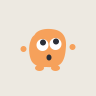
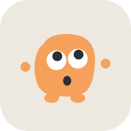
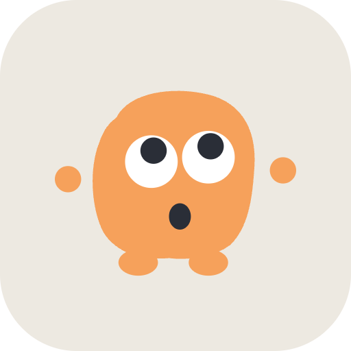
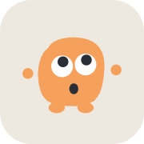

Todo lo que se imprime o se publica para el lanzamiento. Los QR son reales: escanéalos y abren ontoy.app. La lámina va en cada Tino; el color es el de su ruta.
Tres posts de feed (4:5) y dos historias (9:16). Van con un Ontoy por pieza y con una sola idea cada una. En redes Ontoy puede exagerar un poco más, pero siempre dice la verdad.
El ícono es Ontoy «¡Ya viene!» sobre banqueta. Así se ve entre tus apps, de día y de noche, y así arranca la app al abrirla.




manifest.ts.